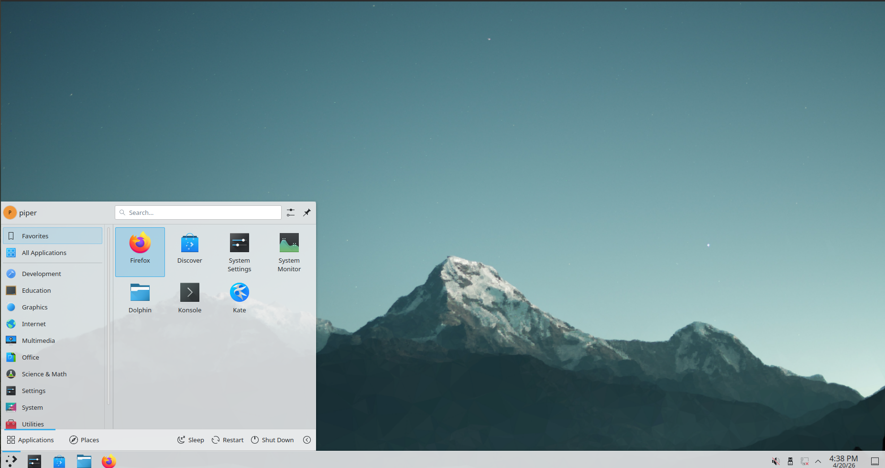

A Linux OS that
just works.
Piper OS is fast, minimal, and beautiful. No bloat, no noise, no nonsense — just a clean base to do whatever you do, better.

Why Piper OS?
Built different.
By design.
Every pixel, every kernel tweak, every default — chosen with one goal: maximum performance with minimum friction, so you can put all your energy into what actually matters.
Blazing Fast Performance
Piper OS boots in seconds and stays snappy no matter what you throw at it. Stripped of bloat, every cycle goes to you — not the OS.
Secure & Private
Zero telemetry. Your data stays on your machine — always.
Stunning Aesthetics
KDE Plasma with a refined dark theme. Looks premium out of the box.
Piper Connect
Bridge your phone and laptop seamlessly. Send files, mirror notifications, and control your device — without breaking your flow.
Focus Mode
A built-in mode that clears distractions and sharpens your environment. One command and everything else falls away.
Pre-Installed Apps
Ready to go.
Day one.
Piper OS ships with a curated set of apps that cover real use cases — no trials, no bloatware, no junk. Just tools that work.
Spotify
Music for every mode — lofi, hype, chill
Anki
Retention-first knowledge tool
LibreOffice
Writer, Calc & more
Firefox
Fast, private browsing
Kate Editor
Focused, powerful text editing
GNOME Clocks
Timers, alarms & world clock
VLC
Play any media file instantly
Konsole
Fast, minimal terminal with Focus shell
Focus Mode
Your terminal. Reimagined.
Every time you open Konsole, Piper OS greets you with a branded system overview via fastfetch, quick-access study aliases, and a minimalist prompt that gets out of your way.
-
focus-mode— silence distractions, launch your flow -
clocks— launch a timer for any kind of session -
spotify— open your go-to playlist instantly -
neofetch— flex your system stats any time
____ _
| _ \(_)_ __ ___ _ __
| |_) | | '_ \ / _ \ '__|
| __/| | |_) | __/ |
|_| |_| .__/ \___|_|
|_| [Piper OS v1.1]
System Requirements
Will it run on
your machine?
Piper OS is designed to run on modern hardware, giving you the best experience without compromise.
Processor
RAM
Storage
Display
Get Started
Download Piper OS
Focus Edition
A complete, ready-to-use operating system. Fast, clean, and built to get out of your way. Free forever. No sign-ups. No strings attached.
Boot from USB and try Piper OS without installing. Install when you're ready.
Download ISO (2.5 GB)SHA256 checksum available on GitHub
Clone the build scripts, fork the repo, and build your own custom version of Piper OS.
View on GitHubMIT Licensed — free to use and modify